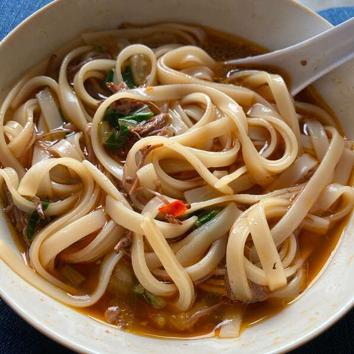

Beef Noodles

Description
A classic Taiwanese/Chinese dish! Tons of flavor and spice! One of my favorite noodle dishes of all time in a slow-cooker version. A bowl of this in the winter evenings will warm you right up!
Ingredients
- 2 pounds beef stew meat, cut into 1-inch cubes
- water to cover
- 3 tablespoons vegetable oil, or more as needed
- 8 cups water, or more as needed
- 1 (14 ounce) can beef broth
- 1 cup soy sauce
- ½ cup rice wine
- 1 bunch green onions, cut into 2-inch pieces
- ¼ cup brown sugar
- 10 cloves garlic, peeled, or more to taste
- 4 small chile peppers, halved and seeded, or more to taste
- 2 tablespoons chile paste
- 1 (1 1/2 inch) piece fresh ginger, peeled and cut into 5 pieces
- 3 star anise pods, or more to taste
- 1 teaspoon Chinese five-spice powder
- 4 small heads baby bok choy
- 1 (10 ounce) package udon noodles
- 1 tablespoon chopped pickled Chinese mustard greens, or to taste (Optional)
Steps
- Place beef in a stockpot and pour in enough water to cover; bring to a boil. Remove from heat and drain.
- Pour vegetable oil into a slow cooker; add beef, 8 cups water, beef broth, soy sauce, rice wine, green onions, brown sugar, garlic, chile peppers, chile paste, ginger, star anise, and Chinese five-spice powder.
- Cook on Low for 8 to 9 hours.
- Transfer beef to a bowl with a slotted spoon. Strain broth into a bowl. Discard solids.
- Bring a pot of water to a boil; add bok choy for 30 seconds. Remove and run under cold water. Cook udon noodles in the boiling water until tender yet firm to the bite, about 4 minutes. Drain.
- Divide noodles among serving bowls and top with beef, baby bok choy, and broth. Top with Chinese pickled mustard greens.
Return to Home Page